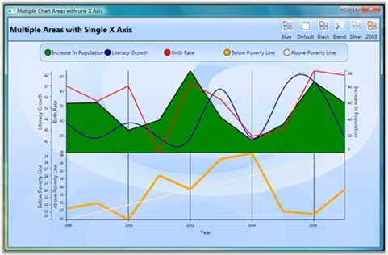
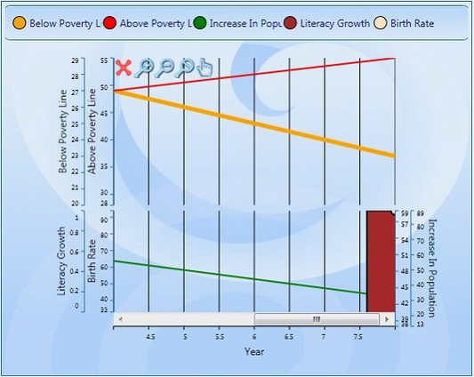

Essential Chart WPF lets you align multiple chart areas by using a single primary axis. You can synchronize the chart axis by using the following code snippet.
|
[XAML]
<sfChart:SyncChartAreas> <sfChart:SyncChartAreas.PrimaryAxis> <sfChart:ChartAxis Name="year" LabelFontSize="8" ValueType="Double" RangePadding="None" RangeCalculationMode="ConsistentAcrossChartTypes" sfChart:ChartArea.ShowGridLines="True" Header="Year"> </sfChart:ChartAxis> </sfChart:SyncChartAreas.PrimaryAxis> <sfChart:SyncChartAreas.Areas> <sfChart:ChartArea Background="Transparent"> <sfChart:ChartArea.SecondaryAxis> <sfChart:ChartAxis Name="Literacy" IntersectAction="Hide" LabelFontSize="8" ValueType="Double" Header="Literacy Growth" RangePadding="None" sfChart:ChartArea.ShowGridLines="False" /> </sfChart:ChartArea.SecondaryAxis> <sfChart:ChartSeries Name="series22" Label="Increase In Population" BindingPathX="Year" BindingPathsY="IncreaseInPopulation" Type="Area" StrokeThickness="2" Interior="Green" > <sfChart:ChartSeries.YAxis> <sfChart:ChartAxis sfChart:ChartArea.ShowGridLines="False" Header="Increase In Population" OpposedPosition="True" Orientation="Vertical" LabelFontSize="8" ValueType="Double" RangePadding="None" /> </sfChart:ChartSeries.YAxis> </sfChart:ChartSeries> <sfChart:ChartSeries Name="series21" Label="Literacy Growth" BindingPathX="Year" BindingPathsY="LiteracyGrowth" Type="Spline" StrokeThickness="2" Interior="DarkBlue"/> </sfChart:ChartArea> </sfChart:SyncChartAreas.Areas> </sfChart:SyncChartAreas> |
|
[C#]
SyncChartAreas syncAreas = new SyncChartAreas(); ChartAxis primaryAxis = new ChartAxis(); syncAreas.PrimaryAxis = primaryAxis;
ChartArea area1 = new ChartArea(); syncAreas.Areas.Add(area1);
ChartArea area2 = new ChartArea(); syncAreas.Areas.Add(area2); |
Run the code. The following output is displayed.

Figure 75: Multiple Chart Areas with a single X-axis
Additional Zooming Functionality for SyncChartAreas
Essential chart now supports the concepts of Zoomin, Zoomout and panning in the SyncChartArea.
Adding Additional Zooming Functionality
Add Additional Zooming Functionality, by using the following code.
|
[Xaml]
<sfChart:SyncChartAreas IsContextMenuEnabled="True"> |
|
[C#]
syncArea.IsContextMenuEnabled = true; |
when the code runs,the following output displays.

Figure 76: Zooming Options